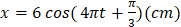
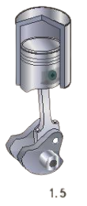

Điền đáp số (có thể dùng dấu phẩy hoặc dấu chấm thập phân). Mỗi câu 0,25 điểm.
1
Nhận biết
Một chất điểm dao động điều hòa với phương trình $x=5\text{cos}\left( 4\pi t+\frac{\pi}{2}\right)\text{cm}$. Li độ của chất điểm tại thời điểm $t=2,5\,s$ là bao nhiêu cm ?
cm
2
Nhận biết
Một chất điểm dao động điều hòa với phương trình $x=5\text{cos}\left( 4\pi t+\frac{\pi}{2}\right)\text{cm}$. Li độ của chất điểm tại thời điểm $t=2,5\,s$ là bao nhiêu cm ?
cm
3
Nhận biết
Một chất điểm dao động điều hòa trên quỹ đạo MN = 20 cm, biên độ dao động là bao nhiêu cm?
cm
4
Nhận biết
Một vật dao động điều hòa theo trục Ox, trong khoảng thời gian 60 giây vật thực hiện được 120 dao động. Khi đó chu kì của vật có giá trị bao nhiêu giây?
s
5
Nhận biết
Một vật dao động điều hòa theo trục Ox, trong khoảng thời gian 1 phút 30 giây vật thực hiện được 180 dao động. Khi đó chu kì là bao nhiêu giây?
s
6
Nhận biết
Một vật dao động với phương trình

(cm). Chu kì dao động của vật là bao nhiêu (s)?
s
7
Nhận biết

Pit-tông của một động cơ đốt trong dao động trên một đoạn thẳng dài 16 cm và làm cho trục khuỷu của động cơ quay đều như hình. Biên độ dao động của một điểm trên pit-tông bằng bao nhiêu cm?
cm
8
Nhận biết
Pit-tông của một động cơ đốt trong dao động trên một đoạn thẳng dài 24 cm và làm cho trục khuỷu của động cơ quay đều. Biên độ dao động của một điểm trên pit-tông là bao nhiêu cm (làm tròn kết quả đến chữ số hàng đơn vị)?
cm
9
Nhận biết
Một vật nhỏ dao động điều hòa theo phương trình $x = A\cos 10t$ (t tính bằng s), A là biên độ. Tại t = 2 s, pha của dao động là?
rad
10
Nhận biết
Một vật nhỏ dao động theo phương trình $x = 5\cos(\omega t + 0{,}5\pi)$ (cm). Pha ban đầu của dao động là?
rad
11
Nhận biết
Một chất điểm dao động theo phương trình $x = 5\cos4\pi t$ (cm) có pha tại thời điểm $t = 1$ s là bao nhiêu ($\pi$ rad). (lấy nguyên $\pi$)
$\pi$ rad
12
Nhận biết
Một vật dao động điều hòa theo một quỹ đạo dài 18 cm. Dao động có biên độ là bao nhiêu cm?